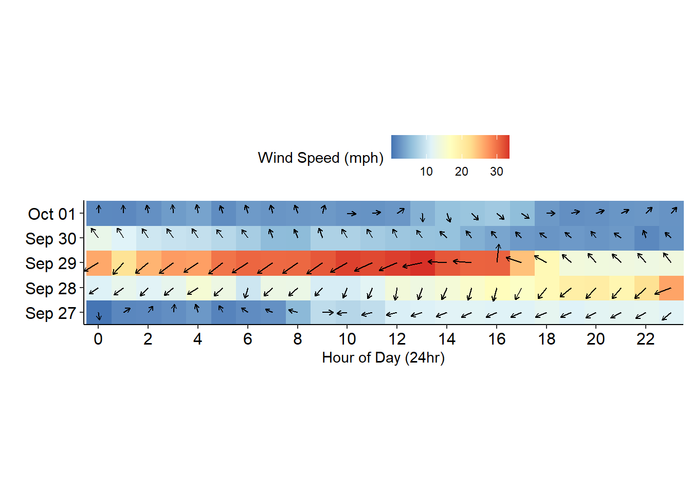

library(openair)
windRose(mydata)I work with water quality and meteorological data regularly with my work. As such, I am often trying to find creative ways to summarize and visualize this data to share with resource managers, educators, and colleagues. One of the recent challenges has been on how to present wind speed and direction data in an easy-to-digest format to other people.
This came about in my work summarizing the effects of recent hurricanes Ian (October 2022) and Nicole (November 2022) in northeast Florida. The typical way folks in my office have depicted wind data has been through the use of wind roses. Don’t get me wrong, wind roses have their usefulness! However, when it came to the matter of these hurricanes, I was also interested in a time element to the data that is just not captured well in a wind rose.
Here’s an example of a wind rose from the openair package.
For this, I wanted to to see if there was a way to visualize the predominating wind directions and speeds in the days preceding, during, and following the hurricanes. So, I went down a Google rabbit hole attempting to examples of how others have attempted something like this in the past. I wanted something that:
was captured in a 2-D static image
showed direction and speed at specific time intervals
was easy to understand
I ended up stumbling upon a great thread on Stack Overflow that used a raster grid-style plot where every cell had a latitude and longitude component as well as the wind speed and direction. Since I was visualizing wind data generated from a single, fixed station
Here is the data we are working with: aggregated 15-minute wind speed (m/s) and direction data averaged to the hour.
head(MET) datetimestamp wspd wdir
1 2022-09-26 23:00:00 0.050 236.00
2 2022-09-27 00:00:00 0.050 97.75
3 2022-09-27 01:00:00 0.675 211.75
4 2022-09-27 02:00:00 0.725 233.25
5 2022-09-27 03:00:00 0.925 260.25
6 2022-09-27 04:00:00 1.250 286.75Using the dplyr::mutate() function, I then pulled out the day and hour information from the datetimestamp variable and also converted wind speed into miles per hour (this is what is reported in the news).
MET_dat <- MET %>%
dplyr::mutate(day = lubridate::date(datetimestamp),
hour = lubridate::hour(datetimestamp),
wspd_mph = wspd * 2.23694)
head(MET_dat) datetimestamp wspd wdir day hour wspd_mph
1 2022-09-26 23:00:00 0.050 236.00 2022-09-26 23 0.111847
2 2022-09-27 00:00:00 0.050 97.75 2022-09-27 0 0.111847
3 2022-09-27 01:00:00 0.675 211.75 2022-09-27 1 1.509935
4 2022-09-27 02:00:00 0.725 233.25 2022-09-27 2 1.621781
5 2022-09-27 03:00:00 0.925 260.25 2022-09-27 3 2.069170
6 2022-09-27 04:00:00 1.250 286.75 2022-09-27 4 2.796175I used that thread on Stack Overflow to create a similar plot with a color scheme I preferred. Instead of latitude and longitude, I plotted by hour and day. I also used scale_x_continuous to break the x-axis so it is easier to read the hours in the day.
MET_dat %>%
filter(day > as.Date("2022-09-26")) %>%
ggplot(aes(x = hour,
y = day,
fill = wspd_mph,
angle = wdir,
radius = scales::rescale(wspd_mph, c(.3, .8)))) +
geom_raster() +
geom_spoke(arrow = arrow(length = unit(.05, 'inches'))) +
scale_fill_distiller(palette = "RdYlBu") +
coord_equal(expand = 0) +
scale_x_continuous(breaks = c(0,2,4,6,8,10,12,14,16,18,20,22)) +
theme_classic() +
theme(axis.text = element_text(color = "black", size = 12),
legend.position = 'top',
legend.direction = 'horizontal') +
labs(x = "Hour of Day (24hr)",
y = "",
fill = "Wind Speed (mph)")I noticed something weird with the direction data, however, and after some reading into the code I realized that the geom_spoke function uses radians instead of degrees. So I needed to convert my degrees into radians. I also wanted these arrows to be pointing in the direction the wind is flowing, so I had to do some additional fudging. After all that, I have the plot below:
MET_dat %>%
filter(day > as.Date("2022-09-26")) %>%
mutate(wdir_x = (wdir +180) * 0.0174533) %>% # convert to radians
ggplot(aes(x = hour,
y = day,
fill = wspd_mph,
angle = wdir_x,
radius = scales::rescale(wspd_mph, c(.3, .8)))) +
geom_raster() +
geom_spoke(arrow = arrow(length = unit(.05, 'inches'))) +
scale_fill_distiller(palette = "RdYlBu") +
coord_equal(expand = 0) +
scale_x_continuous(breaks = c(0,2,4,6,8,10,12,14,16,18,20,22)) +
theme_classic() +
theme(axis.text = element_text(color = "black", size = 12),
legend.position = 'top',
legend.direction = 'horizontal') +
labs(x = "Hour of Day (24hr)",
y = "",
fill = "Wind Speed (mph)")
All in all, I enjoy this figure and like how this plot allows me to see the passage of the storm relative to the weather station. I’m still on the hunt for good data visualizations of wind, but for now, this was pretty nice!
Last updated
2023-03-21 16:26:37 EDT